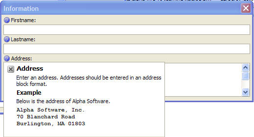
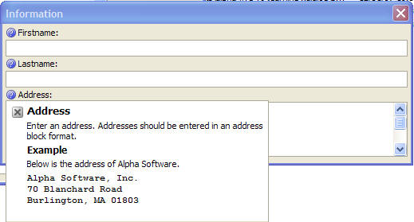

User-Defined Popup Help in Xdialog
The new a5_showPopupHelp() makes it very easy to put help buttons on an Xdialog that the user can click for additional help. The help can be defined using Xdialog or HTML.
(See example in Learning Xdialog.)

The new a5_showPopupHelp() makes it very easy to put help buttons on an Xdialog that the user can click for additional help. The help can be defined using Xdialog or HTML.
(See example in Learning Xdialog.)
